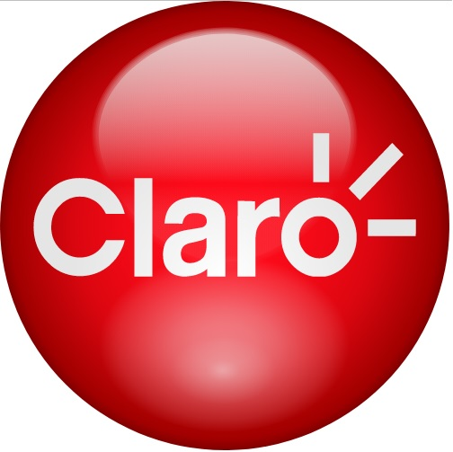

Sobre mim:
Acredito que a chave do Sucesso seja nos mantermos em constante Evolução!
Bacharel em Ciência da Computação, iniciei minha jornada profissional na cidade de São Paulo em 2010 na área de Infraestrutura em Tecnologia da Informação, onde tive a oportunidade de vivenciar os bastidores da tecnologia e seu impacto nas organizações. No início de 2012 tive a oportunidade de trabalhar com Análise e Processamento de Dados, área que me identifiquei muito e definitivamente me conquistou pela sua capacidade de transformar dados em informações valiosas para apoio nas tomadas de decisão. Durante cinco anos trabalhando nesta área atuei em grandes empresas dos setores de Finanças e Telecomunicações, onde meus esforços contribuíram para o desenvolvimento e sucesso dos negócios e me renderam um prêmio de Reconhecimento Global pelo Trabalho em Equipe.
Minha busca por conhecimento me levou a me especializar em Gestão Empreendedora e Ciência de Dados, áreas que me permitiram aprimorar minhas habilidades e me tornar um profissional mais completo. Atualmente, sou funcionário público concursado e atuo como Coordenador de Equipe na área de Planejamento e Infraestrutura em TI, onde aplico meu conhecimento em gestão de pessoas, resolução de problemas, implementação de soluções baseadas em dados e planejamento estratégico, sempre buscando atualização constante e agregando valor à equipe.
Acredito que o aprendizado é um processo contínuo e sou apaixonado por leitura, principalmente de livros voltados a negócios, finanças, liderança, psicologia, desenvolvimento pessoal e inteligência emocional, áreas que me permitem expandir meus conhecimentos e aprimorar minhas habilidades. Além disso, procuro estudar constantemente sobre tendências em tecnologia, carreiras e área de dados, o que me leva a estar sempre em busca de novas informações e oportunidades de crescimento. Também dedico parte do meu tempo a hobbies como a produção de cerveja artesanal, onde desenvolvo minhas habilidades em planejamento, organização e gestão do tempo.
Mantenho uma rotina regular de exercícios físicos priorizando cuidar da minha saúde e bem-estar. Gosto muito de viajar, conhecer novos lugares e culturas, o que me proporciona experiências enriquecedoras e me ajuda a ter uma visão mais ampla do mundo.
Por fim, considero que passar tempo de qualidade com a minha família é fundamental, pois fortalece nossos laços e me proporciona momentos de grande alegria!
Experiência Profissional:
 Prefeitura Municipal de Santa Rita do Passa Quatro (2017 até atualmente)
Prefeitura Municipal de Santa Rita do Passa Quatro (2017 até atualmente)
Coordenador de Equipe - Tecnologia da Informação
- Reestruturação da área de Tecnologia da Informação baseado em princípios corporativos, garantindo maior agilidade na execução dos processos e demandas, permitindo maior satisfação dos serviços prestados aos diversos departamentos atendidos.
- Desenvolvimento e Implementação do Plano Diretor de Tecnologia da Informação, garantindo maior transparência e direcionamento nas ações da área a curto e médio prazo.
- Gestão, elaboração, planejamento e controle de relatórios de performance da área com análise de dados para otimização
do fluxo de atendimentos e melhor gerenciamento de demandas:
- Desenvolvimento de Relatórios e Métricas de Performance referente ao fluxo de atendimento da equipe para acompanhamento, permitindo constantemente identificar pontos de melhoria e otimização. - Gestão de processos e projetos ligados à área de tecnologia, garantindo qualidade no atendimento e eficiência na entrega dos serviços:
- Desenvolvimento e condução de processos e projetos orientados à entrega de serviços de qualidade, com análise de métricas de performance e constante otimização. - Gestão de contratos, elaboração de relatórios e interface com clientes e fornecedores ligados à área com foco na qualidade
dos serviços e implementação de novas tecnologias:
- Desenvolvimento de Relatórios voltados ao processo de organização de documentos e acompanhamento de demandas administrativas, trazendo uma visão geral dos principais indicadores administrativos e de gestão da área. - Constante otimização de processos a fim de adquirir maior qualidade e eficiência nas demandas internas e externas.
- Ferramentas: Excel, ITIL, Gestão de Pessoas, Gestão de Processos.
 Claro S/A (2014-2016)
Analista de Dados - Planejamento Comercial
- Elaboração e constante otimização de relatórios (KPI’s) de vendas e faturamento de produtos para auxílio à diretoria,
gerência e vendedores no entendimento de seus Indicadores com foco em agregar valor às informações disponibilizadas e contribuir ativamente
nas tomadas de decisão:
- Desenvolvimento de Relatórios à equipe de vendas dos setores de Varejo Regional, Varejo Nacional e Recarga de Crédito, agregando valor às informações disponibilizadas para tomadas de decisão destes canais de vendas;
- Automatização e Otimização de Processos relacionados ao processamento das Bases de Dados, com ganho de significativo de performance. - Análise e manutenção de relatórios com otimização e estruturação de informações, gerenciamento de novas visões,
manutenção de Banco de Dados, criação e adequação de layouts:
- Gestão de relatórios dos referidos canais de vendas com constante atualização junto às equipes interessadas, trazendo significativos ganhos de performance e produtividade destas equipes. - Constante otimização de processos a fim de adquirir maior qualidade e eficiência na disponibilização de informações,
bem como garantir a continuidade dos negócios da área:
- Reuniões periódicas junto às equipes de vendas dos referidos canais com foco na evolução das visões e otimização contínua de processos, contribuindo significativamente com ganhos de performance em todos os processos sob minha gestão. - Interface com T.I. em todas as questões relacionadas ao Banco de Dados (tabelas e visões utilizadas pela área) e em projetos específicos da área:
- Contato direto junto à equipe de gestão de Banco de Dados da empresa, garantindo que as informações disponibilizadas atendessem à demanda da área;
- Contribuição contínua em projetos relacionados ao Banco de Dados com troca de informações, brainstorm e alinhamento das melhores práticas junto à equipe de Tecnologia da Informação. - Ferramentas: Access, Excel, Power Point, PL/SQL Developer, SAP.
Serasa Experian (2012-2014)
Analista de Dados - Planejamento Comercial
- Elaboração e disponibilização de relatórios nacionais e internacionais com informações
qualitativas sobre projeção e faturamento de vendas e produtos, garantindo a otimização de importantes
relatórios da área com automatização de tarefas e foco em agregar valor nas análises de negócios referente
às áreas de Finanças e Comercial:
- Automatização e Otimização de Relatório de Consultas Online, proporcionando análises rápidas e precisas às equipes envolvidas;
- Automatização de Relatórios Visuais com criação e configuração de vínculos de dados do Excel ao Power Point, otimizando o tempo de confecção das Apresentações;
- Otimização de Processos relacionados a Bases de Dados dos relatórios de Projeções de Vendas, com ganho em performance de processamento. - Reconhecimento Global pelo Trabalho em Equipe através do programa Recognition Serasa Experian.
- Ferramentas: Access, Excel, Power Point, SAS.
Formação Acadêmica / Certificações:
- XP Educação - Pós Graduação MBA em Ciência de Dados (2023)
- Competências: Python, SQL, NoSQL, Spark, Machine Learning, Design Thinking, Storytelling. - Centro Universitário Senac - Pós Graduação em Gestão Empreendedora (2018)
- Competências: Empreendedorismo, Gestão de Negócios, Gestão de Pessoas. - Universidade Paulista - Bacharelado em Ciência da Computação (2009)
- Competências: Programação (HTML, C/C++, Java), Banco de Dados (SQL), Redes, Sistemas Operacionais (Windows, Linux). - Comunidade DS (2023-2024)
- Machine Learning / Métricas de Negócio / Power BI - DataViz e ETL / Python - Análise de Dados / SQL
- Projetos em Ciência de Dados: Classificação / Clusterização / Insights / Regressão Linear e Logística - Escola Conquer (2022-2023)
- Produtividade Inteligente / Comunicação e Oratória
- Produtividade e Gestão do Tempo / Inteligência Emocional / Formação em Liderança - AXELOS Global Best Practice - ITIL Foundation Certificate in IT Service Management (2021)
- Melhores Práticas em Gestão de Processos de Tecnologia da Informação
Formação Acadêmica:
Certificações:
Habilidades:
Comportamentais |
Técnicas |
|---|---|
Portfólio de Projetos - Ciência de Dados
Confira meu Portfólio de Projetos realizados na área de Ciência de Dados:
Contato:
Fique à vontade para entrar em contato!